File: 000090.gt.txt (if the image is defective, simply delete all Arabic text and the line will be excluded)
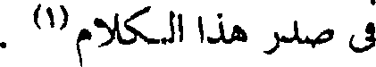
في صدر هذا الكلام(1) .
File: 000091.gt.txt (if the image is defective, simply delete all Arabic text and the line will be excluded)
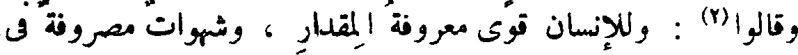
وقالوا(2) : وللإنسان قوى معروفة المقدار ، وشهوات مصروفة في
File: 000092.gt.txt (if the image is defective, simply delete all Arabic text and the line will be excluded)
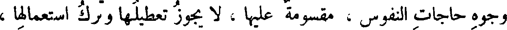
وجوه حاجات النفوس ، مقسومة عليها ، لا يجوز تعطيلها وترك استعمالها ،
File: 000093.gt.txt (if the image is defective, simply delete all Arabic text and the line will be excluded)
ما كانت النفوس قائمة بطبائعها ومزاجاتها وحاجاتها . وباب المنكح من
File: 000094.gt.txt (if the image is defective, simply delete all Arabic text and the line will be excluded)
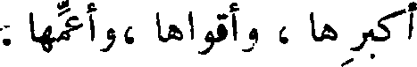
أكبرها ، وأقواها ،وأعمها .
File: 000095.gt.txt (if the image is defective, simply delete all Arabic text and the line will be excluded)
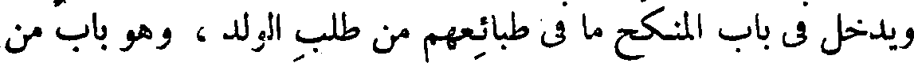
ويدخل في باب المنكح ما في طبائعهم من طلب الولد ، وهو باب من
File: 000096.gt.txt (if the image is defective, simply delete all Arabic text and the line will be excluded)
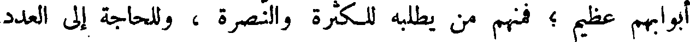
أبوابهم عظيم ؛ فمنهم من يطلبه للكثرة والنصرة ، وللحاجة إلى العدد
File: 000097.gt.txt (if the image is defective, simply delete all Arabic text and the line will be excluded)
والقوة ، ولذلك استلاطت العرب الرجال ، وأغضت(3) على نسب المولود
File: 000098.gt.txt (if the image is defective, simply delete all Arabic text and the line will be excluded)
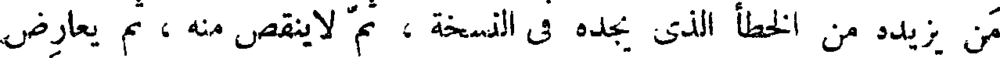
من يزيده من الخطأ الذي يجده في النسخة ، ثم لاينقص منه ، ثم يعارض
File: 000099.gt.txt (if the image is defective, simply delete all Arabic text and the line will be excluded)
بذلك من يترك ذلك المقدار من الخطأ على حاله ، إذا كان ليس من طاقته
File: 000100.gt.txt (if the image is defective, simply delete all Arabic text and the line will be excluded)
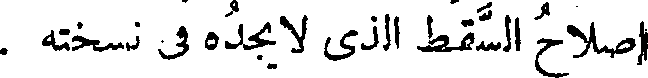
إصلاح السقط الذي لا يجده في نسخته .
File: 000101.gt.txt (if the image is defective, simply delete all Arabic text and the line will be excluded)
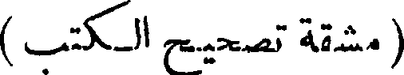
( مشقة تصحيح الكتب )
File: 000102.gt.txt (if the image is defective, simply delete all Arabic text and the line will be excluded)
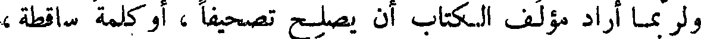
ولربما أراد مؤلف الكتاب أن يصلح تصحيفا ، أو كلمة ساقطة ،
File: 000103.gt.txt (if the image is defective, simply delete all Arabic text and the line will be excluded)
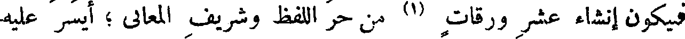
فيكون إنشاء عشر ورقات (1) من حر اللفظ وشريف المعاني ؛ أيسر عليه
File: 000104.gt.txt (if the image is defective, simply delete all Arabic text and the line will be excluded)
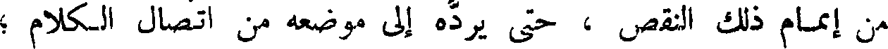
من إتمام ذلك النقص ، حتى يرده إلى موضعه من اتصال الكلام ؛
File: 000105.gt.txt (if the image is defective, simply delete all Arabic text and the line will be excluded)
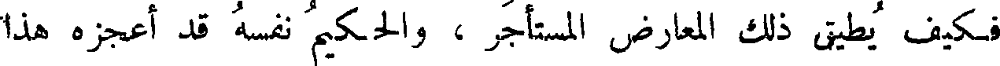
فكيف يطيق ذلك المعارض المستأجر ، والحكيم نفسه قد أعجزه هذا
File: 000106.gt.txt (if the image is defective, simply delete all Arabic text and the line will be excluded)
الباب ! وأعجب من ذلك أنه يأخذ بأمرين : قد أصلح الفاسد وزاد الصالح
File: 000107.gt.txt (if the image is defective, simply delete all Arabic text and the line will be excluded)
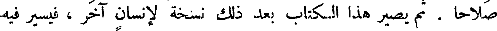
صلاحا . ثم يصير هذا الكتاب بعد ذلك نسخة لإنسان آخر ، فيسير فيه
File: 000108.gt.txt (if the image is defective, simply delete all Arabic text and the line will be excluded)
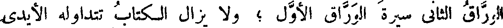
الوراق الثاني سيرة الوراق الأول ؛ ولا يزال الكتاب تتداوله الأيدي
File: 000109.gt.txt (if the image is defective, simply delete all Arabic text and the line will be excluded)
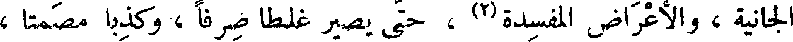
الجانية ، والأعراض المفسدة(2) ، حتى يصير غلطا صرفا ، وكذبا مصمتا ،
File: 000110.gt.txt (if the image is defective, simply delete all Arabic text and the line will be excluded)
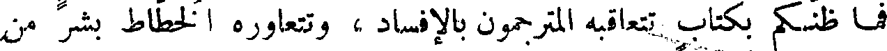
فما ظنكم بكتاب تتعاقبه المترجمون بالإفساد ، وتتعاوره الخطاط بشر من
File: 000111.gt.txt (if the image is defective, simply delete all Arabic text and the line will be excluded)
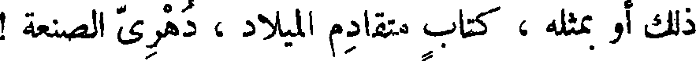
ذلك أو بمثله ، كتاب متقادم الميلاد ، دهري الصنعة !
File: 000112.gt.txt (if the image is defective, simply delete all Arabic text and the line will be excluded)
( بين أنصار الكتب وأنصار الشعر )
File: 000113.gt.txt (if the image is defective, simply delete all Arabic text and the line will be excluded)
قالوا : فكيف تكون هذه الكتب أنفع لأهلها من الشعر المقفى ؟
File: 000114.gt.txt (if the image is defective, simply delete all Arabic text and the line will be excluded)
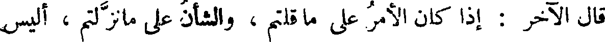
قال الآخر : إذا كان الأمر على ما قلتم ، والشأن على مانزلتم ، أليس
File: 000115.gt.txt (if the image is defective, simply delete all Arabic text and the line will be excluded)
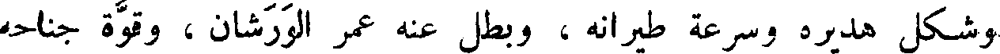
وشكل هديره وسرعة طيرانه ، وبطل عنه عمر الورشان ، وقوة جناحه
File: 000116.gt.txt (if the image is defective, simply delete all Arabic text and the line will be excluded)
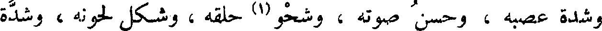
وشدة عصبه ، وحسن صوته ، وشحو(1) حلقه ، وشكل لحونه ، وشدة
File: 000117.gt.txt (if the image is defective, simply delete all Arabic text and the line will be excluded)
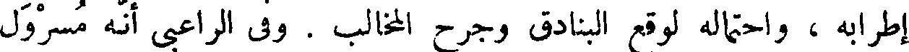
إطرابه ، واحتماله لوقع البنادق وجرح المخالب . وفي الراعبى أنه مسرول
File: 000118.gt.txt (if the image is defective, simply delete all Arabic text and the line will be excluded)
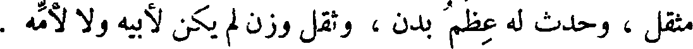
مثقل ، وحدث له عظم بدن ، وثقل وزن لم يكن لأبيه ولا لأمه .
File: 000119.gt.txt (if the image is defective, simply delete all Arabic text and the line will be excluded)
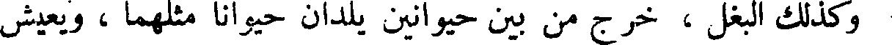
وكذلك البغل ، خرج من بين حيوانين يلدان حيوانا مثلهما ، ويعيش
To Save: `Ctrl+s`, make sure to choose `Webpage, complete`!